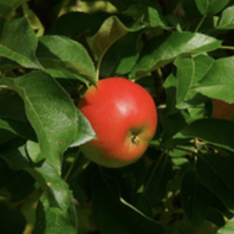

Interacting with Images Using Force Prompts
A user can interact with an image by specifying a force vector (location, angle, magnitude) on the image. With this force prompt, the video generator then generates the resultant scene. No physics simulator used at inference time!
While currently the results are not real-time or per-frame causal (though it is causal with respect to the conditioning signal), we believe that they show the potential of future video generation models as they get faster, more efficient, and more powerful.
Local Force Prompts
Interactive Force Prompting Demos: Try It Yourself! Click on a thumbnail below to select a demo. Then, click on the white bead in the image and drag along the indicated line. Release the mouse to see the generated video!
Linear Motion
Oscillatory Motion
Complex Motion

Global Force Prompts
Interactive Force Prompting Demos: Try It Yourself! Click on a thumbnail below to select a demo. Then, click on the wind icon to select a wind direction and see the generated video!
Tethered Motion